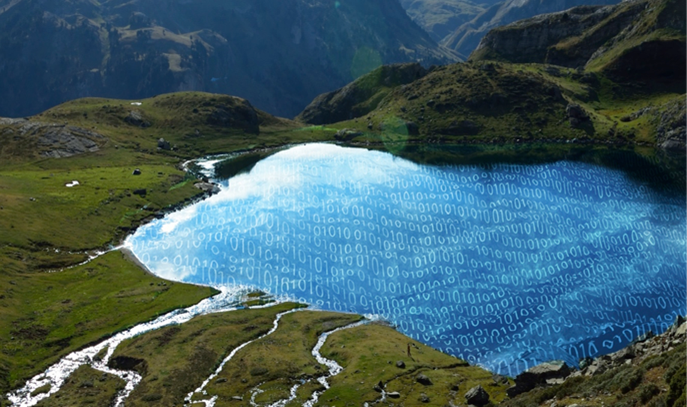

What is a Data Lake?

A data lake is a system or repository of data stored in its natural/raw format, usually object blobs or files. A data lake is usually a single store of all enterprise data including raw copies of source system data and transformed data used for tasks such as reporting, visualization, advanced analytics and machine learning.
A data lake can include structured data from relational databases (rows and columns), semi-structured data (CSV, logs, XML, JSON), unstructured data (emails, documents, PDFs) and binary data (images, audio, video)
Examples
Many companies use cloud storage services such as Azure Data Lake and Amazon S3 or a distributed file system such as Apache Hadoop. There is a gradual academic interest in the concept of data lakes.
For example, Personal DataLake at Cardiff University is a new type of data lake which aims at managing big data of individual users by providing a single point of collecting, organizing, and sharing personal data.
An earlier data lake (Hadoop 1.0) had limited capabilities with its batch-oriented processing (MapReduce) and was the only processing paradigm associated with it. Interacting with the data lake meant one had to have expertise in Java with map reduce and higher level tools like Apache Pig, Apache Spark and Apache Hive (which by themselves were batch-oriented).